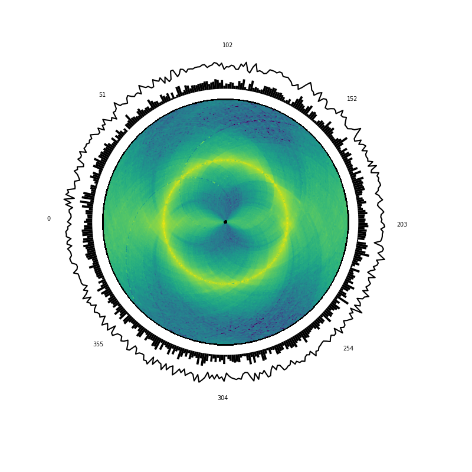

Note
Click here to download the full example code or to run this example in your browser via Binder
Changing the origin of the heatmap¶
from iced.normalization import ICE_normalization
from circhic import datasets
from circhic._base import CircHiCFigure
# Load the data, compute the cumulative raw counts.
data = datasets.load_ccrescentus()
counts = data["counts"]
lengths = data["nbins"]
cumul_raw_counts = counts.sum(axis=0)
# Normale the data using ICE, and keep the biases
counts, bias = ICE_normalization(counts, output_bias=True)
circhicfig = CircHiCFigure(lengths, origin=lengths.sum() / 4)
circhicfig.plot_hic(counts, outer_radius=0.75)
# Assume you want to plot data from that ranges in a polar plot outside of the
# first one. Then the 0 axis should be at, say, 80% of the axis
circhicfig.plot_bars(cumul_raw_counts, inner_radius=0.8, outer_radius=0.9,
color="0")
# Now, plot a last plot, for the top 10% of the original axes
circhicfig.plot_lines(bias, color="0", inner_radius=0.9, outer_radius=1)
# Now, try to do a simple "theta-axis" on the outer
ax = circhicfig.set_genomic_ticklabels()
Total running time of the script: ( 0 minutes 1.853 seconds)